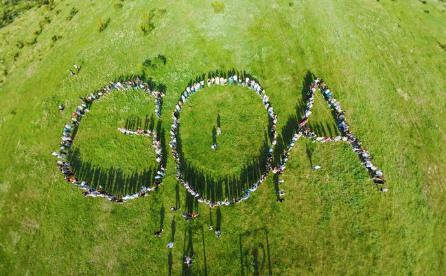

Goal Oriented Academy is an educational institution or organization focused on helping individuals set, pursue, and achieve their personal and professional goals. These kinds of academies often offer a range of programs and resources, such as workshops, seminars, and courses, designed to develop skills, provide guidance, and foster motivation.
Typically, such an academy might focus on: Skill Development: Providing training and resources in specific areas like leadership, project management, or personal development.
Goal Setting: Teaching techniques for setting realistic and achievable goals, and creating actionable plans to reach them.
Motivation and Productivity: Offering strategies to stay motivated, manage time effectively, and overcome obstacles.
Networking and Support: Creating opportunities for individuals to connect with mentors, peers, and professionals who can offer support and advice.
Personalized Coaching: Providing one-on-one or group coaching to help individuals tailor their approach to goal achievement.
If you are interested in a particular academy with this name, or if there are specific details you're looking for, I can help find more targeted information!